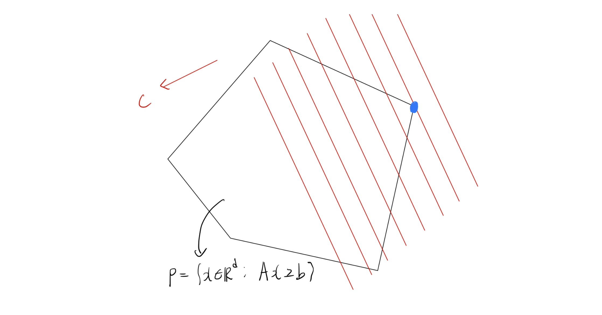
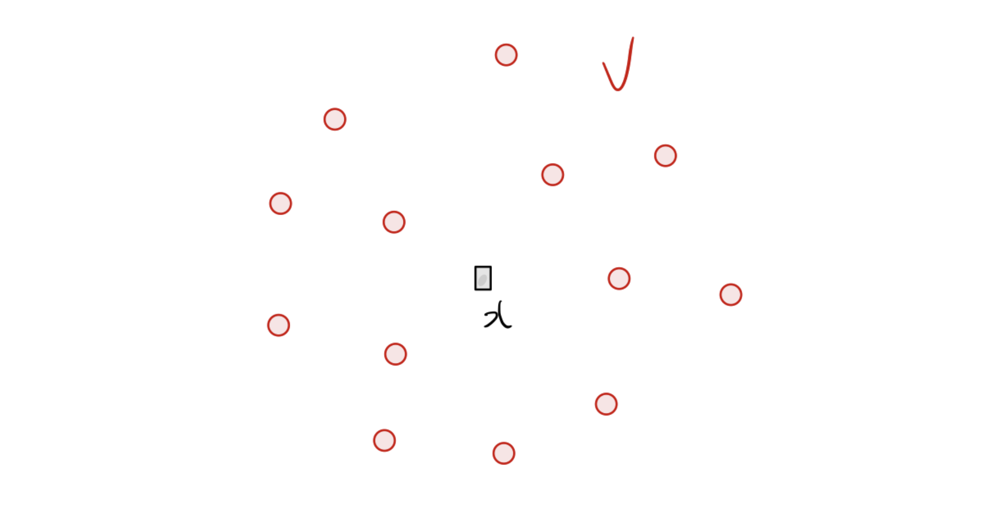
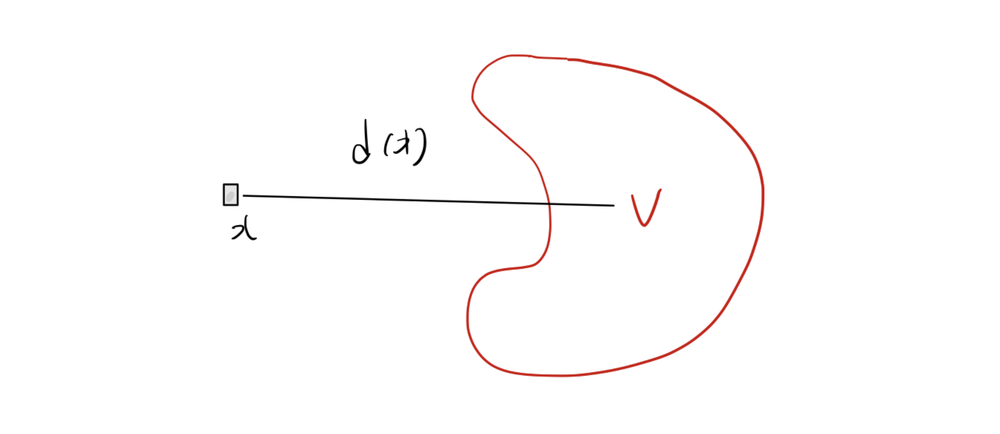

1. Introduction: 볼록 최적화(Convex Optimization)의 계층 구조
머신러닝, 통계학, 계량경제학 등 데이터 과학 전반에서 마주하는 수많은 모델링 문제는 결국 최적화(Optimization) 문제로 귀결됩니다. 그중에서도 볼록 최적화(Convex Optimization)는 국소 최적점(Local minimum)이 곧 전역 최적점(Global minimum)이 된다는 강력한 수학적 성질 덕분에 가장 널리 쓰이고 깊이 연구된 분야입니다.
볼록 최적화 문제들은 그 형태와 제약 조건의 특성에 따라 여러 하위 클래스로 분류될 수 있으며, 일종의 계층(Hierarchy) 구조를 이룹니다.

위 그림에서 알 수 있듯, 선형 계획법(Linear Programming, LP)은 볼록 최적화 피라미드의 가장 안쪽에 위치하는 기초적이고 핵심적인 문제 클래스입니다. 이번 포스트에서는 LP의 수학적 정의부터, 겉보기에는 비선형(Non-linear)인 문제들을 어떻게 LP 형태로 우회하여 풀 수 있는지(Linear Representability)에 대해 깊이 있게 다루어 보겠습니다.
2. 선형 계획법(Linear Programming)의 정의와 기하학적 의미
선형 계획법(LP)은 목적 함수(Objective function)와 모든 제약 조건(Constraints)이 결정 변수(Decision variables)에 대해 선형(Linear)인 최적화 문제를 말합니다.
수학적으로 LP는 일반적으로 다음과 같은 형태를 가집니다:
\[ \begin{aligned} \min_{x} \quad & c^\top x \\ \text{s.t.} \quad & a_i^\top x \ge b_i, \quad i \in [m] \\ & x \in \mathbb{R}^d \end{aligned} \]
- 여기서 각 변수와 매개변수는 다음과 같습니다:
- \(x \in \mathbb{R}^d\): 결정 변수 벡터
- \(c \in \mathbb{R}^d\): 선형 목적 함수를 결정하는 비용(Cost) 벡터
- \(a_1, \dots, a_m \in \mathbb{R}^d\): 각 선형 부등식 제약조건의 계수 벡터
- \(b_1, \dots, b_m \in \mathbb{R}\): 각 제약조건의 상수항
- \([m]\)은 \(\{1, 2, \dots, m\}\)의 집합을 의미합니다.
이를 행렬 형태(Matrix form)로 간결하게 표현하면 다음과 같습니다:
\[ \begin{aligned} \min_{x} \quad & c^\top x \\ \text{s.t.} \quad & Ax \ge b \end{aligned} \] (단, \(A\)는 행이 \(a_i^\top\)인 \(m \times d\) 행렬이고, \(b \in \mathbb{R}^m\)입니다.)

위 다면체 \(P = \{x \in \mathbb{R}^d : Ax \ge b\}\) 내에서 \(c^\top x\)를 최소화하는 점을 찾는 것이 LP의 본질입니다.
3. 실생활에서의 선형 계획법 활용 예시
LP가 실제 문제에 어떻게 적용되는지 이해하기 위해 두 가지 고전적인 예시를 살펴보겠습니다.
3.1. 생산 계획 (Production Planning) 문제
- 회사가 \(d\)개의 제품을 생산하며, \(m\)개의 원자재를 사용한다고 가정해 봅시다.
- 제품 \(j\)의 1단위당 판매 가격(수익): \(p_j\)
- 현재 보유 중인 원자재 \(i\)의 재고량: \(b_i\)
- 제품 \(j\)를 1단위 생산하는 데 필요한 원자재 \(i\)의 양: \(a_{ij}\)
- 각 제품은 실수 단위로 분할하여 생산 가능하다고 가정(Divisible).
목표: 주어진 원자재 재고 한도 내에서 총수익을 극대화하는 각 제품의 생산량 \(x_j\)를 결정하라.
\[ \begin{aligned} \max_{x} \quad & p^\top x \\ \text{s.t.} \quad & Ax \le b \\ & x \ge 0 \end{aligned} \]
3.2. 운송 문제 (Transportation Problem)
- \(d\)개의 공장과 \(m\)개의 물류 창고가 있습니다.
- 공장 \(j\)의 최대 생산 용량: \(S_j\)
- 창고 \(i\)의 필요 수요량: \(d_i\)
- 공장 \(j\)에서 창고 \(i\)로 1단위 제품을 운송하는 비용: \(c_{ij}\)
목표: 각 창고의 수요를 충족하고 공장의 생산 한도를 넘지 않으면서 총 운송 비용을 최소화하는 운송량 \(x_{ij}\)를 결정하라.
\[ \begin{aligned} \min_{x} \quad & \sum_{i=1}^m \sum_{j=1}^d c_{ij} x_{ij} \\ \text{s.t.} \quad & \sum_{j=1}^d x_{ij} \ge d_i, \quad i \in [m] \quad \text{(수요 충족)} \\ & \sum_{i=1}^m x_{ij} \le S_j, \quad j \in [d] \quad \text{(생산 용량 한도)} \\ & x_{ij} \ge 0, \quad (i,j) \in [m] \times [d] \end{aligned} \]
4. 선형 표현 가능 함수 (Linearly Representable Functions)
LP는 목적 함수와 제약 조건이 모두 ’선형(Linear)’이어야 한다는 제약이 있습니다. 그렇다면 일반적인 비선형 문제들은 LP로 풀 수 없을까요? 놀랍게도, 많은 비선형 함수들이 보조 변수(Auxiliary variables)를 도입함으로써 선형 형태로 재표현될 수 있습니다.
4.1. Motivation: 군집의 중심 찾기 (Center of a Cluster)
어떤 데이터 셋에 \(n\)개의 관측치 벡터 \(V = \{v^1, \dots, v^n\} \subset \mathbb{R}^d\) 가 있다고 해봅시다. 이 군집을 가장 잘 대표하는 ‘중심(Center)’ 점 \(x\)를 찾고 싶습니다.

중심점을 정하는 기준은 점 \(x\)와 집합 \(V\) 사이의 거리 \(d(x)\)를 최소화하는 것입니다. 즉, 최적화 문제는 다음과 같습니다. \[\min_{x} d(x)\]

- 거리 함수 \(d(x)\)의 선택지에 따라 최적화의 양상이 달라집니다:
- \(\ell_1\)-거리의 합: \(d(x) = \sum_{i=1}^n \|x - v^i\|_1\) (Robust regression의 형태)
- \(\ell_\infty\)-거리의 합: \(d(x) = \sum_{i=1}^n \|x - v^i\|_\infty\)
- \(\ell_1\)-거리의 최댓값: \(d(x) = \max_{i \in [n]} \|x - v^i\|_1\)
- \(\ell_\infty\)-거리의 최댓값: \(d(x) = \max_{i \in [n]} \|x - v^i\|_\infty\)
여기서 사용된 Norm 연산이나 Max 연산은 엄밀히 말해 선형이 아닙니다. 하지만 이러한 거리 함수들을 최소화하는 문제는 모두 선형 계획법(LP)으로 변환할 수 있습니다. 어떻게 이것이 가능한지 이해하기 위해 에피그래프(Epigraph)의 개념을 도입해야 합니다.
4.2. 에피그래프 (Epigraph)
함수 \(f: \mathbb{R}^d \rightarrow \mathbb{R}\)의 에피그래프(Epigraph) \(epi(f)\)는 함수의 그래프 ’위쪽’에 있는 점들의 집합으로 정의됩니다.
\[ epi(f) = \{(x, t) \in \mathbb{R}^d \times \mathbb{R} : f(x) \le t\} \subseteq \mathbb{R}^{d+1} \]

위 그림처럼 에피그래프가 유한 개의 선형 부등식으로 표현되는 다면체(Polyhedron) 형태를 띤다면, 우리는 이 함수를 선형적으로 표현할 수 있다고 말합니다.
4.3. 선형 표현 가능성 (Linear Representability) 정의
함수 \(f: \mathbb{R}^d \rightarrow \mathbb{R}\)가 선형 표현 가능(Linearly Representable)하다는 것은, 그 에피그래프 \(epi(f)\)가 다음과 같이 유한 개의 선형 부등식 시스템으로 표현될 수 있음을 의미합니다:
\[ epi(f) = \left\{ (x, t) \in \mathbb{R}^d \times \mathbb{R} : \exists y \in \mathbb{R}^p \text{ s.t. } Ax + Dy + ht \le r \right\} \]
- \(A \in \mathbb{R}^{l \times d}, D \in \mathbb{R}^{l \times p}, h, r \in \mathbb{R}^l\)
- 여기서 새롭게 도입된 변수 \(y\)를 보조 변수(Auxiliary variables)라고 부릅니다.
4.4. LP 재표현 정리 (Reformulation Theorem)
목적 함수와 제약 조건 함수들이 모두 선형 표현 가능하다면, 원래의 비선형 볼록 최적화 문제는 LP로 완벽하게 변환될 수 있습니다.
정리 (Theorem): 최적화 문제 \(\min \{ f(x) : g_i(x) \le 0, \forall i \in [m] \}\) 가 있을 때, \(f\)와 모든 \(g_i\)가 선형 표현 가능하다면 이 문제는 선형 계획법으로 재표현될 수 있다.
변환 과정: 원래 문제를 에피그래프를 사용하여 다음과 같이 바꿀 수 있습니다. \[ \begin{aligned} \min_{x, t} \quad & t \\ \text{s.t.} \quad & f(x) \le t \quad \iff \quad (x, t) \in epi(f) \\ & g_i(x) \le 0 \quad \iff \quad (x, 0) \in epi(g_i) \end{aligned} \]
이제 각 함수의 선형 표현(보조 변수 \(y, z^1, \dots, z^m\) 도입)을 대입하면 최종적으로 다음과 같은 거대한 LP 형태가 됩니다.
\[ \begin{aligned} \min_{x, t, y, z^1 \dots z^m} \quad & t \\ \text{s.t.} \quad & Ax + Dy + ht \le r \quad \text{(목적 함수 에피그래프 조건)} \\ & A^i x + D^i z^i \le r^i, \quad i \in [m] \quad \text{(각 제약 조건 에피그래프 조건)} \end{aligned} \] 이제 목적 함수는 단순히 \(t\)를 최소화하는 선형 함수가 되었고, 모든 제약 조건 역시 선형 부등식이 되었습니다!
5. 보조 변수(Auxiliary Variables)와 사영(Projection)
선형 표현에서 보조 변수 \(y\)를 추가한다는 것은 기하학적으로 어떤 의미일까요? 이를 이해하기 위해 사영(Projection)과 Fourier-Motzkin 소거법을 살펴보겠습니다.
5.1. 사영(Projection)의 기하학적 의미
어떤 집합 \(C \subseteq \mathbb{R}^d \times \mathbb{R}^p\) 가 있을 때, 이 집합 안의 점들을 \((x, y)\)로 나타낼 수 있습니다. 이 집합을 \(x\)가 존재하는 공간(\(\mathbb{R}^d\))으로 사영시킨 집합 \(proj_x(C)\)는 다음과 같이 정의됩니다:
\[ proj_x(C) = \{ x \in \mathbb{R}^d : \exists y \in \mathbb{R}^p \text{ s.t. } (x, y) \in C \} \] 이를 두고 “\(y\) 변수들을 투영하여 없앤다(Projecting out)”고 표현하기도 합니다.

- 에피그래프 \(epi(f)\) 식을 다시 보면:
- 먼저 \((x, y, t)\) 차원의 더 높은 공간에서 다면체 \(\mathcal{P} = \{ (x, y, t) : Ax + Dy + ht \le r \}\)를 만듭니다.
- 이 다면체 \(\mathcal{P}\)를 보조 변수 \(y\)를 무시하고 \((x, t)\) 공간으로 사영시키면, 우리가 원하던 복잡한 형태의 \(epi(f)\)가 나타나게 되는 것입니다. (\(proj_{(x,t)}(\mathcal{P}) = epi(f)\))
정리: 다면체의 사영은 여전히 다면체이다. (따라서 에피그래프가 다면체이므로, 선형 표현 가능한 함수는 반드시 조각적 선형 함수(Piecewise linear function) 형태를 가집니다.)
5.2. Fourier-Motzkin Elimination (소거법)
보조 변수를 기하학적으로 사영시키는 과정을 대수적으로 수행하는 방법이 바로 Fourier-Motzkin 소거법입니다. 연립 선형 부등식에서 특정 변수(예: \(y_1\))를 없애는 과정입니다.
- \(Ax + Dy + ht \le r\) 시스템에서 \(y_1\)의 계수 \(D_{i1}\)의 부호에 따라 부등식을 세 그룹으로 나눕니다:
- \(I_+ = \{i : D_{i1} > 0\}\) (\(y_1\)에 대한 하한 제공)
- \(I_- = \{i : D_{i1} < 0\}\) (\(y_1\)에 대한 상한 제공)
- \(I_0 = \{i : D_{i1} = 0\}\) (\(y_1\)과 무관)
\(i \in I_+\)인 식과 \(j \in I_-\)인 식에서 \(y_1\)에 대해 식을 정리하면 다음을 얻습니다: \[ \frac{A_i x + D_i y_{-1} + h_i t - r_i}{D_{i1}} \le y_1 \le \frac{A_j x + D_j y_{-1} + h_j t - r_j}{D_{j1}} \] 가운데 \(y_1\)을 매개로 양 끝단을 연결하면 \(y_1\)이 완전히 소거된 새로운 부등식을 얻게 됩니다. \[ \frac{A_i x + D_i y_{-1} + h_i t - r_i}{D_{i1}} \le \frac{A_j x + D_j y_{-1} + h_j t - r_j}{D_{j1}} \] 이 과정을 모든 변수 \(y\)에 대해 반복하면 최종적으로 \(x, t\)에 대한 부등식(즉, 에피그래프)만 남게 됩니다. 이를 통해 다면체의 사영이 다면체임을 증명할 수 있습니다.
6. 자주 등장하는 선형 표현 가능 함수들 유도
실제 머신러닝이나 통계 모델링에서 자주 등장하는 비선형 함수들이 어떻게 선형 표현 가능한지 구체적으로 유도해보겠습니다.
6.1. 절댓값 함수 (Absolute Value)
\(f(x) = |x|\) (\(x \in \mathbb{R}\)) \(f(x) \le t \iff |x| \le t\) 이며, 절댓값의 정의에 의해 이는 \(-t \le x \le t\) 와 동치입니다. 따라서 에피그래프는 다음과 같습니다: \[ epi(f) = \{(x, t) \in \mathbb{R} \times \mathbb{R} : x \le t, -x \le t\} \] 이는 별도의 보조 변수 없이도 2개의 선형 부등식으로 표현되므로 선형 표현 가능합니다.
6.2. 볼록 조각적 선형 함수 (Convex Piecewise Linear Functions)
여러 선형 함수의 점근적 최댓값으로 정의되는 함수입니다. \(f(x) = \max_{i \in [n]} \{ c_i^\top x + d_i \}\) 최댓값이 \(t\)보다 작거나 같다는 것은, 집합 내의 모든 요소가 \(t\)보다 작거나 같다는 것과 완벽히 동치입니다. \[ \max_{i \in [n]} \{ c_i^\top x + d_i \} \le t \iff c_i^\top x + d_i \le t, \quad \forall i \in [n] \] 따라서 에피그래프는: \[ epi(f) = \{(x, t) \in \mathbb{R}^d \times \mathbb{R} : c_i^\top x + d_i \le t, \forall i \in [n]\} \] 이 역시 \(n\)개의 선형 부등식으로 표현됩니다. (앞서 다룬 강의자료 슬라이드 21의 Example 2 \(f(x) = \max\{x_1, 2x_2+x_3, 2x_3-x_1\}\)도 동일한 원리로 표현됩니다.)
6.3. \(\ell_\infty\)-Norm (최댓값 노름)
\(f(x) = \|x\|_\infty = \max_{j \in [d]} |x_j|\) 이는 각 차원의 성분 중 절댓값이 가장 큰 값을 반환합니다. 이 역시 최댓값 연산의 성질에 따라 분리 가능합니다. \[ \|x\|_\infty \le t \iff \max_{j} |x_j| \le t \iff |x_j| \le t, \quad \forall j \in [d] \] 절댓값 부등식을 풀면: \[ \iff -t \le x_j \le t, \quad \forall j \in [d] \] 따라서, \[ epi(f) = \{(x, t) \in \mathbb{R}^d \times \mathbb{R} : x_j \le t, -x_j \le t, \forall j \in [d] \} \] 총 \(2d\)개의 선형 부등식으로 표현 가능합니다.
6.4. \(\ell_1\)-Norm (맨해튼 노름)
라소(Lasso) 회귀 등에서 자주 쓰이는 \(\ell_1\) 페널티 형태입니다. \(f(x) = \|x\|_1 = \sum_{j \in [d]} |x_j|\) 이 경우는 합 기호 안에 절댓값이 있으므로 단순 전개가 안 됩니다. 여기서 보조 변수(Auxiliary variables) \(s_1, \dots, s_d \in \mathbb{R}\) 를 도입하는 강력한 테크닉이 사용됩니다. 각각의 절댓값 \(|x_j|\) 상한을 대신할 보조 변수 \(s_j\)를 둡니다.
\[ \|x\|_1 \le t \iff \exists s_1, \dots, s_d \in \mathbb{R} \text{ s.t. } \sum_{j \in [d]} s_j \le t \text{ and } |x_j| \le s_j \quad \forall j \in [d] \] \(|x_j| \le s_j\)는 \(-s_j \le x_j \le s_j\)와 같습니다. 따라서, \[ epi(f) = \left\{ (x, t) : \exists s \in \mathbb{R}^d \text{ s.t. } \sum_{j=1}^d s_j \le t, x_j - s_j \le 0, -x_j - s_j \le 0, \forall j \right\} \] 보조 변수 \(s\)를 도입함으로써 비선형적이었던 \(\ell_1\) norm 최소화 문제가 완벽한 선형 부등식 시스템으로 재탄생했습니다. 앞서 4.1절에서 고민했던 군집 중심 찾기 문제 중 분수 및 절댓값 조합도 모두 이러한 방식으로 LP 화가 가능합니다.
6.5. 선형 표현 가능성을 보존하는 연산들
- 개별 함수들이 선형 표현 가능하다면, 다음 연산들을 통해 결합된 복잡한 함수 역시 선형 표현 가능함이 수학적으로 보장됩니다:
- 비음수 가중치 합 (Non-negative linear combination): \(f(x) = \sum_{i \in [n]} \alpha_i f_i(x)\) (단, \(\alpha_i \ge 0\))
- 점별 최댓값 (Point-wise maximum): \(f(x) = \max_{i \in [n]} f_i(x)\)